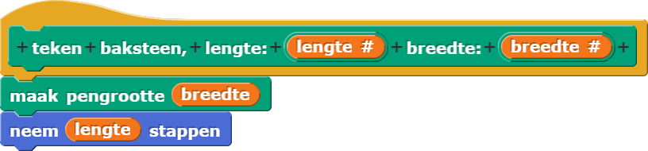

Bakstenen muur

In dit project, ga je abstractie gebruiken om een bakstenen muur te tekenen.

Abstractie
Iedere goede programmeertaal heeft manieren ingebouwd om voorwerpen te tekenen en bewegen. Het zou alleen niet logisch zijn om een ingebouwde manier te hebben om bakstenen te tekenen, omdat de meeste programma's geen bakstenen nodig hebben. Dat is een voorbeeld van een functiesdie je zelf moet maken als je het nodig hebt.
Door een speciaal  blok te
maken, zorg je ervoor dat je blok een naam heeft die gerelateerd is aan het probleem
dat je aan het oplossen bent (in dit geval
blok te
maken, zorg je ervoor dat je blok een naam heeft die gerelateerd is aan het probleem
dat je aan het oplossen bent (in dit geval teken baksteen), in plaats van een algemene
functie met een algemene naam (zoals beweeg) die de computer gebruikt voor van alles.
Één Baksteen Tekenen
Een afbeelding van een baksteen is gewoon een rechthoek met de rode kleur van een baksteen. Hoewel er geen
teken rechthoekblok bestaat in snap, bestaan er toch manieren om
er een te tekenen. Één manier is om een rechthoek te zien als een hele dikke lijn. Hieronder zie je dit idee
toegepast.

Het  blok zit niet standaard in
Snap!. In projecten zonder dit blok, kan je "Flat line ends" aanzetten in het
blok zit niet standaard in
Snap!. In projecten zonder dit blok, kan je "Flat line ends" aanzetten in het
 menu.
menu.
Normaliter tekent Snap! dikke lijnen met afgeronde eindes:
 .
Dat is vaak de beste keuze, en je kan de reden daarvoor hieronder zien. Maar voor bakstenen willen
we dat het einde van een lijn recht is:
.
Dat is vaak de beste keuze, en je kan de reden daarvoor hieronder zien. Maar voor bakstenen willen
we dat het einde van een lijn recht is:
 .
.

Rechte vs. afgeronde lijneindes.
-

Dit project bevat het geheleteken baksteenblok zoals hieronder. Lees eerst de code, probeer het daarna uit.

Probleem-decompositie gebruiken
Je wil eigenlijk dat het blok op het hoogste niveau er ongeveer zo uitziet:

Om dat te krijgen heb je iets nodig dat probleem-decompositie heet: het probleem opbreken
in kleinere stukken.
Er zijn twee soorten rijen, dus we maken blokken die gespecialiseerd zijn in ieder type:
- Rij A:

- Rij B:

- Gebruik
teken baksteenom de blokken en
en
 te maken.
te maken. - De twee soorten rijen moeten precies dezelfde lengte zijn. Bij je eerste poging om Rij B te tekenen
is de rij waarschijnlijk te lang.
Debug het probleem.
- M oet Rij B bakstenen van een andere grootte hebben, gaten van andere grootte hebben of zijn alleen andere blokken aan het eind nodig?
- Als je het niet zeker weet, probeer dan alle mogelijkheden en bepaal zelf wat er het beste uit ziet.
- Of bedenk "Wat zou het meest logisch zijn in een echte bakstenen muur?"
Als je eenmaal rijen A en B dezelfde lengte hebt gemaakt, dan ben je er klaar voor om het
 blok te maken.
blok te maken.
-
Importeer je
even?blok en gebruik het om het blok te schrijven.
Je vindt het misschien handig om weer even te kijken naar
Hoofdstuk 2 Les 1 Pagina 4: Importeer
blok te schrijven.
Je vindt het misschien handig om weer even te kijken naar
Hoofdstuk 2 Les 1 Pagina 4: Importeer Groet Spelersin een ander programma om te herhalen hoe je een blok importeert en Hoofdstuk 2 Les 3 Pagina 1: Wat is een predikaat? voor heteven?blok. Lees de sectie "Benodigdheden Importeren" hieronder en test je nieuwe blok om er zeker van te zijn dat het goed werkt.Benodigdheden Importeren

Je hebt je
even?blok gemaakt met behulp van een ander zelfgemaakt blok,deelbaar door?. Je moet beide blokken exporteren, zodateven?werkt wanneer je het importeert in je Bakstenen-Muurproject.Als je ooit dit rode
Obsolete!blok ziet in code die je geïmporteerd hebt, dan betekent dat, dat een benodigd blok niet is geëxporteerd. Je moet dan terug naar je originele project en het opnieuw exporteren. Zorg ervoor dat je alle blokken die je nodig hebt, selecteert bij het exporteren.
- Gebruik je bakstenen muur in een ander project door je bakstenen-muurblokken te exporteren
en importeren. Je vindt het misschien handig om weer even te kijken naar
Hoofdstuk 2 Les 1 Pagina 4: Importeer
Groet Spelersin een ander programma.
-
Voeg meer invoeren toe aan je
teken Bakstenen Muur(en indien nodig aan jerij Aenrij B) voor:
- Het aantal bakstenen per rij.
- De lengte en breedte van een baksteen.
- De gatdikte.
Voeg deze één voor één toe, niet allemaal tegelijkertijd! Wanneer je de lengte van een baksteen aanpast, moet dat ook de lengte van een baksteen in rij B aanpassen. Als je de gatdikte aanpast, moet dat ook de afstand tussen de rijen veranderen.